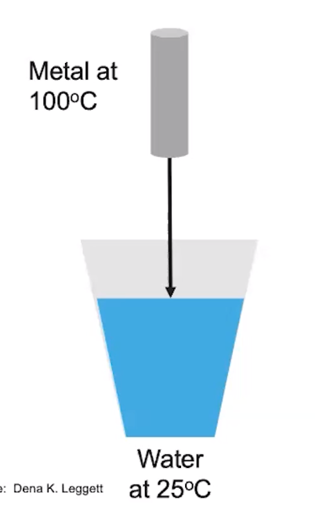

Calorimetry
Calorimetry
Simple calorimeter
-
Calorimetry: a method used to measure heat changes in an experiment
-
{width="3.6458333333333335in" height="0.375in"}
- Same magnitude, opposite sign
-
 {width="3.8229166666666665in" height="2.625in"}
{width="3.8229166666666665in" height="2.625in"}
Heat transfer experiments:
- Hot metal dropped into water
{width="2.21875in" height="3.5520833333333335in"}
-
 {width="2.53125in" height="0.375in"}
{width="2.53125in" height="0.375in"}- {width="9.28125in" height="0.3958333333333333in"}
<!-- -->
- Dissolving of an ionic salt
 {width="2.5208333333333335in" height="5.09375in"}
{width="2.5208333333333335in" height="5.09375in"}
-
{width="3.6458333333333335in" height="0.375in"}
-
 {width="3.7708333333333335in" height="0.375in"}
{width="3.7708333333333335in" height="0.375in"} -
 {width="7.34375in" height="0.3958333333333333in"}
{width="7.34375in" height="0.3958333333333333in"}-
When the salt dissolves, it becomes part of the surroundings
- Along with the sater
-
-